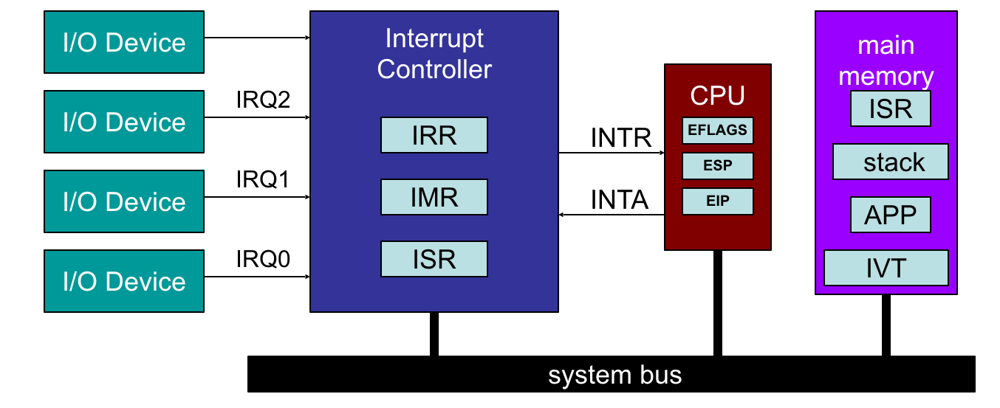
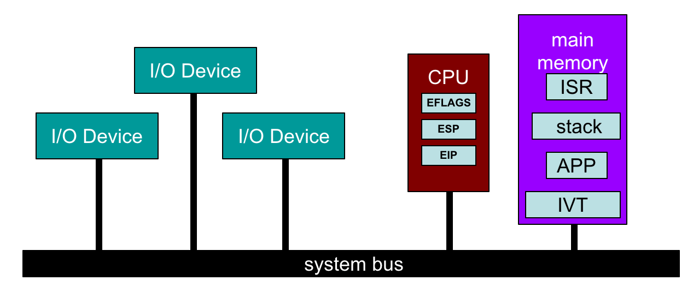

#220817 网络栈接收数据 RX | 从网卡收到包到 net_rx_action¶
常见的几种 intel 网卡¶
igb i 是 intel，gb 表示（每秒 1）Gb。老网卡。
ixgbe x 是罗马数字 10，所以 xgb 表示 10Gb，e 表示以太网。
i40e intel 40Gbps 以太网。
本文使用 ixgbe 网卡。
收包过程¶
网络包会被通过 DMA（Direct Memory Access） 写入内存 ring buffer 中。
网卡触发 硬件中断 ，通知系统网卡有新的网络包到来。
硬件中断程序通过 软中断 通知 ksoftirqd。
ksoftirqd 调用网络收包程序从 ring buffer 中收取所网络包并封装成 skb 结构体给上面的网络协议栈去处理。当没有包继续收的时候，退出收包程序。
网卡中断处理程序¶
调用栈：
ixgbe_msix_clean_rings(irq, data)
|- q_vector = data
|- napi_schedule_irqoff(&q_vector->napi)
|- __napi_schedule_irqoff
|- ____napi_schedule(this_cpu_ptr(&softnet_data), n)
|- list_add_tail(&napi->poll_list, &sd->poll_list);
|- __raise_softirq_irqoff(NET_RX_SOFTIRQ);
ixgbe 网卡驱动注册的硬件中断处理函数是 ixgbe_msix_clean_rings，现在网卡一般都支持多队列，系统会为每个 CPU 配置一个网卡队列，每个队列有独立的中断，独立的 ring buffer，每个中断对应一个 napi_struct 结构体，也就是上面调用栈中的 q_vector->napi。中断处理函数将 napi_struct 挂到本 CPU 的 softnet_data->poll_list 中，然后触发一个 NET_RX_SOFTIRQ 类型的软中断通知本 CPU 自己的 ksoftirqd 来收包。
ksoftirqd 是软中断处理进程， ps 可以看到， / 后面的数字是 CPU id。
# ps aux|grep ksoftirqd
root 10 0.0 0.0 0 0 ? S Aug16 0:01 [ksoftirqd/0]
root 16 0.0 0.0 0 0 ? S Aug16 0:00 [ksoftirqd/1]
开始收包¶
调用栈：
net_rx_action()
|- sd = this_cpu_ptr(&softnet_data)
|- for n in sd->poll_list
napi_poll(n)
|- __napi_poll
|- n->poll()/ixgbe_poll(n) \
|- ixgbe_clean_rx_irq |
|- ixgbe_get_rx_buffer 驱
|- ixgbe_run_xdp 动
|- ixgbe_build_skb |
|- ixgbe_rx_skb /
|- napi_gro_receive
NET_RX_SOFTIRQ 类型的软中断对应的处理函数是 net_rx_action。这个函数做的事就是遍历本 CPU 的 softnet->poll_list ，对于链表里所有的 napi_struct，调用其 poll 函数。 poll 函数是网卡驱动初始化的时候注册的，比如 ixgbe 网卡的 poll 函数就是 ixgbe_poll，这个函数实际从 napi_struct 指向的 ring buffer 中收割包并封装成一个一个的 skb 结构，最终调用 napi_gro_receive 函数进入网络设备子系统作进一步处理。
各种处理函数、poll 函数都是怎么来的¶
上面收包过程中的各种处理函数主要在下面这三个地方注册。
首先，在网络设备子系统（netdev subsys）的初始化函数中，设置了 NET_RX_SOFTIRQ 和 NET_TX_SOFTIRQ 的软中断处理函数，并且初始化了硬软中断交互用的 softnet->poll_list 结构体。
net_dev_init
|- for_each_possible_cpu(i)
| struct softnet_data *sd = &per_cpu(softnet_data, i)
| INIT_LIST_HEAD(&sd->poll_list)
|
|- open_softirq(NET_TX_SOFTIRQ, net_tx_action)
|- open_softirq(NET_RX_SOFTIRQ, net_rx_action)
第二，网卡一般都是 PCI express 设备，ixgbe 网卡驱动模块的 module_init 函数中，会调用 pci_register_driver 将自己注册为 PCI 驱动，注册结构体中的 id_table 列出自己所有能够驱动的 PCI 设备 ID， 内核检测到 PCI 设备后，会根据设备 ID 来寻找能够驱动这个设备的驱动，然后调用 probe 函数来初始化好这个设备。
static struct pci_driver ixgbe_driver = {
.name = ixgbe_driver_name,
.id_table = ixgbe_pci_tbl,
.probe = ixgbe_probe,
};
static const struct pci_device_id ixgbe_pci_tbl[] = {
{PCI_VDEVICE(INTEL, IXGBE_DEV_ID_82598), board_82598 },
{PCI_VDEVICE(INTEL, IXGBE_DEV_ID_82598AF_DUAL_PORT), board_82598 },
{PCI_VDEVICE(INTEL, IXGBE_DEV_ID_82598AF_SINGLE_PORT), board_82598 },
{PCI_VDEVICE(INTEL, IXGBE_DEV_ID_82598AT), board_82598 },
// ...
};
static int __init ixgbe_init_module(void) {
ret = pci_register_driver(&ixgbe_driver);
}
ixgbe_probe 是个比较庞大的函数，里面干的事有：
pci_enable_device_memEnable 网卡这个 PCI 设备。初始化 DMA。调用
dma_set_mask_and_coherent设置 DMA Mask，DMA_BIT_MASK(64)表示网卡可以读写 64bit 内存地址。pci_set_masterEnable DMA。申请创建一个新的网络设备，设置设备相关的操作函数
netdev_ops、ethtool操作函数等。创建 MSI-X 中断，为每个中断分配一个
napi_struct，设置其poll函数为ixgbe_poll函数。
ixgbe_probe(struct pci_dev *pdev, const struct pci_device_id *ent)
|- pci_enable_device_mem(pdev)
|
|- dma_set_mask_and_coherent(&pdev->dev, DMA_BIT_MASK(64))
|- pci_request_mem_regions(pdev, ixgbe_driver_name)
|- pci_set_master(pdev)
|- pci_save_state(pdev)
|
|- netdev = alloc_etherdev_mq(sizeof(struct ixgbe_adapter), indices)
|- netdev->netdev_ops = &ixgbe_netdev_ops
|- ixgbe_set_ethtool_ops(netdev)
|
|- ixgbe_init_interrupt_scheme
| |- ixgbe_set_interrupt_capability
| | |- ixgbe_acquire_msix_vectors
| | |- vectors = ...
| | |- adapter->msix_entries = kcalloc(vectors, sizeof(struct msix_entry), GFP_KERNEL)
| | |- pci_enable_msix_range(adapter->pdev, adapter->msix_entries, vector_threshold, vectors)
| |- ixgbe_alloc_q_vectors
| |- ixgbe_alloc_q_vector
| |- netif_napi_add(adapter->netdev, &q_vector->napi, ixgbe_poll, 64)
| |- netif_napi_add_weight
| |- napi->poll = ixgbe_poll
|
|- register_netdev(netdev)
最后 一个地方，是在上面网卡设备创建的时候注册的操作函数中的 ixgbe_open 函数中，刚刚创建的网卡设备被内核启用的时候会调用这个函数（called when a network interface is made active by the system IFF_UP）。
static const struct net_device_ops ixgbe_netdev_ops = {
.ndo_open = ixgbe_open,
//...
}
这个函数中，会分配 ring buffer 资源，设置之前创建的网卡中断的处理函数为 ixgbe_msix_clean_rings，启用 napi，启用网卡中断，然后，网络包就可以进来了。
ixgbe_open
|- ixgbe_setup_all_rx_resources
|- ixgbe_setup_all_tx_resources
|
|- ixgbe_request_irq
| |- ixgbe_request_msix_irqs
| for (vector = 0; vector < adapter->num_q_vectors; vector++)
| q_vector = adapter->q_vector[vector]
| entry = &adapter->msix_entries[vector]
| request_irq(entry->vector, &ixgbe_msix_clean_rings, 0, q_vector->name, q_vector)
|
|- ixgbe_up_complete
|- ixgbe_napi_enable_all
| |- napi_enable
|
|- ixgbe_irq_enable
MSI-X 中断是个什么东西¶
https://en.wikipedia.org/wiki/Message_Signaled_Interrupts
MSI 全称 Message Signaled Interrupts，也就是 基于消息信号的中断 ，顾名思义，就是这个中断不需要物理的中断控制器，不需要从设备连一个物理的中断线到中断控制器，中断和数据一样走数据总线就行。
MSI 可以支持每个设备申请 1、2、4、8、16、32 个中断，而 MSI-X 支持每个设备最多申请到 2048 个中断。
因为没有物理的中断线，所以在 pci probe 函数中需要调用 pci 接口创建虚拟的中断线。
老的中断方式：
MSI 中断：
